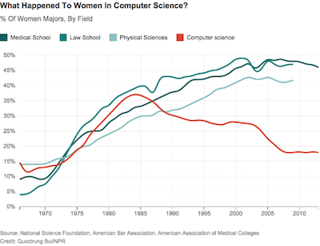

Jestem Michał, jestem...
... inżynierem oprogramowania
... blogerem lewandowski.io
... fanem społeczności IT
... mówcą
... ojcem :)
Agenda
- plan B
- co to znaczy programuję?
- jak zacząć?
- historie
- pierwsza praca i rozwój
- warto zapamiętać
Plan B
Nie ma bezpiecznego zawodu.
Plan B
Programowanie to plan B z każdej branży
Plan B
“Nie ważne, czy będziesz pracował w dziale finansów, sprzedaży czy operacji. Może nie zostaniesz zawodowym programistą, ale będziesz potrafił programować.”
Jeff Immelt, General Electric CEO
Plan B
“Każdy w tym kraju każdy powinien nauczyć się programować, ponieważ uczy to jak powinno się myśleć.”
Steve Jobs, Apple CEO
Plan B
Skoro programuję, to czy mam plan B?
Dlaczego?
Na pierwszy rzut oka?
- biuro
- stabilność, bezpieczeństwo
- swoboda, czasu i miejsca
- pieniądze
Dlaczego?
Mistrzostwo
Osiągnięcie perfekcji
Dlaczego?
Prestiż
Ja to zrobiłem
Dlaczego?
Swoboda tworzenia
Zobaczyć pomysł i go zrealizować
Dlaczego?
Pomagam
Pomagam innym użyć technologii
co to znaczy programuję?
Film:
Jeden bohater, miesiące pracy, efekt
Rzeczywistość:
Testowanie, poprawianie, inspirowanie
co to znaczy programuję?
Algorytmy?
dzielenie problemu na mniejsze
realizacja krok po kroku
co to znaczy programuję?
Układam puzle
FAQ
Jaki muszę być?
- nie musisz być geniuszem
- wystarczy znać "tabliczkę mnożenia"
- determinacja
FAQ
Zwrot z inwestycji?
- rozwiązywanie problemów
- refleksyjne myślenie
FAQ
Pierwszy program?
Zacznij od małej rzeczy
FAQ
Humanista
Słownik języka polskiego:
“Specjalista w dziedzinie nauk humanistycznych.”
FAQ
Kto może zostać programistą?
- lekarz
- polityk
- piekarz
- policjant
- matematyk
- historyk
Każdy może być programistą
FAQ
Programowanie
Słownik języka polskiego:
“Konfigurować (parametryzować) urządzenie sterowane cyfrowo.”
FAQ
Programowanie
Zmuszanie komputera, do wykonania określonych czynności, celem osiągnięcia jakiejś korzyści
Komputer - najgłupsza rzecz na świecie
Co ich łączy?
- Bill Gates
- Mark Zuckerberg
- Steve Jobs
- David Karp
Zrobili karierę bez ukończenia studiów
Studia
Zalety studiowania
- kompleksowa wiedza
- wiedza u podstaw
- uczy jak się uczyć
- wygląda dobrze w CV
- daje czas na wybór
Studia
Wady studiowania
- zajmują dużo czasu - 3.5~5 lat
- nie wszystkie przedmioty są potrzebne
- nie dają doświadczenia
Studia
Studia + praca
- praca po 2 roku studiów
- cenne doświadczenie
- duże zainteresowanie na rynku
Inne sposoby
Kurs
- pół roku i jest fach
- praca w weekendy (na kursie) i w tygodniu (w domu)
- koszt co najmniej 5 tysięcy
- brak wiedzy u podstaw
- wiedza pozwalająca na pracę
Np: Akademia Bottega
Inne sposoby
Samouk
Co robić?
- potrzebny dobry mentor
- kursy online
- meetup - ludzie z branży
- własny projekt
Inne sposoby
Samouk
- nauka w domu - 8h przez 4 miesięcy
- potrzeba dużo samo dyscypliny.
- łatwo się zagubić.
- nie zdobywamy prawdziwego doświadczenia.
Historie
Michał
Gracz komputerowy
Historie
Kasia
Studentka biologii
Historie
Krzysztof
Obsługa leasingów samochodowych
Historie
Mateusz
Mechanik samochodowy
Historie
Magdalena
Moj żona
Pierwsza praca
Zarobki
- Junior - 2-4k
- Mid - 4-10k
- Senior - 10-20k
- Mistrz - 20k+
Pierwsza praca
Doświadczenie
- Junior - 0-3 lat
- Mid - 1-8 lat
- Senior - 4-? lat
- Mistrz - ?
Pierwsza praca
Doświadczenie
5 lat doświadczenia
vs
5 razy powtórzony pierwszy rok
Pierwsza praca
Co ile zmiana pracy?
Średnio co 2-3 lata
Pierwsza praca
Czego szukać u pracodawcy?
- mentorów
- środowiska do rozwoju
- rozsądnych współpracowników
Pierwsza praca
Opłaca się zarabiać więcej
vs
Warto pracować w odpowiednim środowisku
Pierwsza praca
Czego szuka pracodawca
- podstaw programowania
- chęci do nauki
- pracownika na więcej niż rok
Na pewno?
Jak się sprawdzić?
Na pewno?
Nie, ponieważ...
- duży stres, duże napięcie
- ciągła pogoń za technologią
Na pewno?
Mój problem
odbieram ludziom pracę
Ja programista
Czas
Rozwój
Ja programista
Umiejętności miękkie
Ja programista
Ścieżki kariery
- Lider zespołu
- Manager
- Architekt
- Inżynier wsparcia
- Właściciel biznesowy
- Mistrz danych
- Programista
Ja programista
Czy warto w to inwestować?
- Poznawanie nowych języków programowania?
- Specjalizowanie się w jednej branży?
- Wyszukiwanie nisz na rynku?
Ja programista
W co warto inwestować?
Zadbaj o zrównoważony rozwój
W wolnych chwilach, zainwestuj w naukę języka angielskiego
Ja, programistka
Dlaczego w IT nie ma kobiet?
Ja, programistka
Margarett Hamilton - liderka programu Apollo - 1969r.
Ja, programistka

Gry wideo
Ja, programistka
- równe szanse
- otwartość
- szacunek
Warto zapamiętać
Twoja kariera to maraton, nie sprint
Warto zapamiętać
Programowanie to sport zespołowy
Warto zapamiętać
Pozory mylą
{kind=link}
{kind=link}
{kind=link}